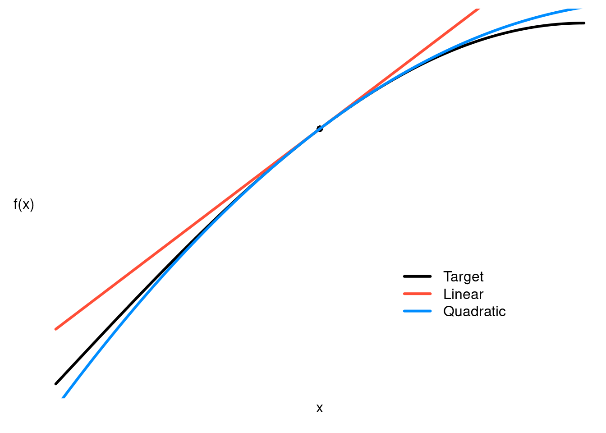

2.3 Derivatives
Definition
The slope of a straight line is straightforward: \(\Delta y / \Delta x\). For a curved line, however, we will get different answers depending on the range over which we calculate these changes. Nevertheless, we can calculate the limit of this slope over shorter and shorter ranges. This is known as the derivative of the function.
Definition: The derivative of a function \(f\) at \(a\), denoted \(f'(a)\), is
\[ f'(a) = \lim_{h \to 0} \frac{f(a+h) - f(a)}{h} \]
if this limit exists.
If the limit exists, \(f\) is said to be differentiable at \(a\). If a function is not continuous at \(a\), it is not possible for it to be differentiable at \(a\). The converse, however, is not true. For example, the function \(f(x) = \lvert x\rvert\) is continuous everywhere, and differentiable just about everywhere, but not differentiable at zero since the limit from the left is -1 and the limit from the right is 1.
Expanding on this pointwise definition, we can define a whole function, \(f'(x)\). This function is known as the derivative of \(f\).
Formulas
It is hard to overstate the importance of knowing the following formulas; you will use them constantly. Below, we assume that \(f\) and \(g\) are differentiable, and that \(c\) is a constant.
\[\begin{align} c' &= 0 \\ (x^n)' &= n x^{n-1} \\ (cf)' &= c f' \\ (f + g)' &= f' + g' \\ (f - g)' &= f' - g' \\ (fg)' &= fg' + gf' \text{ (product rule)}\\ \left( \frac{f}{g} \right)' &= \frac{gf' - fg'}{g^2} \text{ (quotient rule)}\\ \end{align}\]
These basic rules can be combined into all sorts of additional rules with the chain rule, which states that if the derivatives \(g'(x)\) and \(f'(g(x))\) both exist, then the derivative of \(f(g(x))\) exists, and its derivative is \(f'(g(x))g'(x)\). The rule is often expressed in Leibniz notation:
\[ \frac{df}{dx} = \frac{df}{dg} \frac{dg}{dx}. \]
The section on logarthims and exponentals provides additional important differentiation formulas.
Higher derivatives
Since \(f'(x)\) is itself a function, we can also take its derivative. This is called the second derivative of \(f\), and is denoted \(f''(x)\).
Third derivatives, fourth derivatives, and so on are defined similarly.
An important application of higher derivatives is to approximate functions. The linear approximation of \(f\) at \(a\) is given by
\[ f(x) \approx f(a) + f'(a) (x - a). \]
The quadratic approximation of \(f\) at \(a\) is given by
\[ f(x) \approx f(a) + f'(a) (x - a) + \frac{1}{2}f''(a) (x - a)^2. \]
To see these approximations in action, here’s a figure:

Note that (a) both approximations are very good close to \(a\), which is denoted by the black dot and (b) the quadratic approximation is more accurate than the linear approximation. Both of these observations are true broadly speaking; they are not particular to this example.